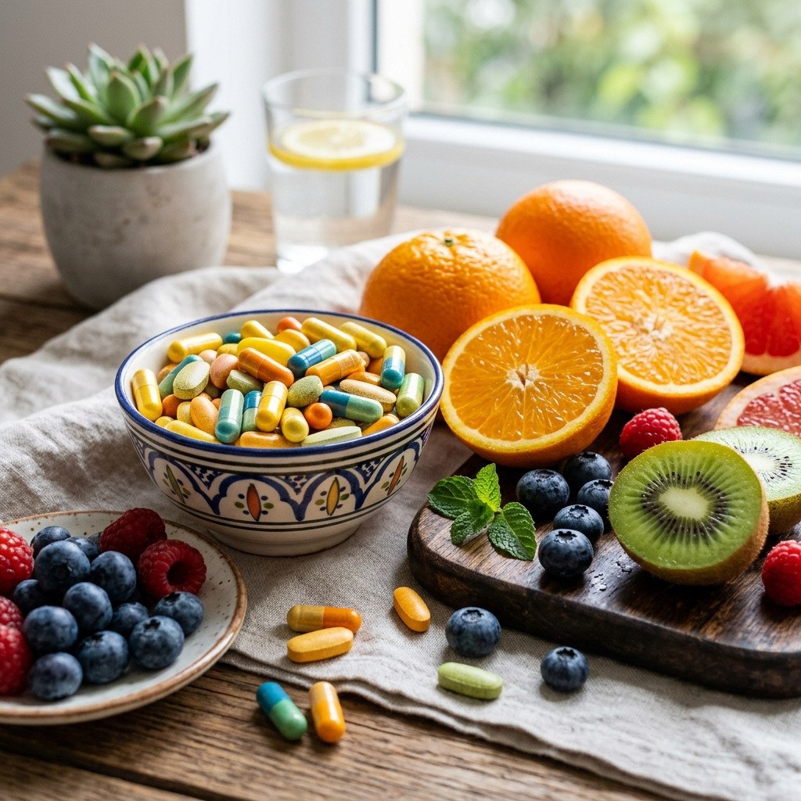

Multivitamínicos: Vale a Pena Tomar Vitaminas em Cápsulas?

Pin ItEm um mundo onde a rotina é cada vez mais acelerada e a alimentação nem sempre é perfeita, os **Multivitamínicos** surgem como uma espécie de "seguro nutricional". Eles são projetados para preencher as lacunas que nossa dieta diária pode deixar, garantindo que o corpo receba todas as vitaminas e minerais essenciais para funcionar em sua capacidade máxima.
Mas será que basta tomar qualquer cápsula colorida para ter saúde? A resposta curta é: não. A qualidade do suplemento e a forma como ele é absorvido pelo seu corpo fazem toda a diferença entre jogar dinheiro fora ou realmente investir na sua longevidade.
Para que serve um Multivitamínico?
Nosso corpo realiza bilhões de processos químicos a cada segundo, e quase todos eles dependem de micronutrientes. Desde a produção de energia nas células até a regeneração da pele e o funcionamento do sistema imunológico, as vitaminas e minerais são os "combustíveis" invisíveis da nossa máquina biológica.
Energia e Vitalidade
Vitaminas do Complexo B são essenciais para transformar os alimentos que você come em energia real para o seu dia a dia.
Sistema Imunológico
Zinco, Vitamina C e Selênio trabalham em conjunto para fortalecer suas defesas naturais contra doenças.
Saúde Cognitiva
Nutrientes como Magnésio e Vitaminas B12 auxiliam na clareza mental, foco e prevenção do declínio cognitivo.
O Diferencial dos Minerais Quelatos
Um dos maiores segredos dos melhores multivitamínicos de 2026 é o uso de **minerais quelatos**. Ao contrário dos minerais comuns, os quelatos são ligados a aminoácidos, o que permite que o corpo os reconheça e absorva com muito mais facilidade, evitando o desperdício e possíveis desconfortos gástricos.
Como e Quando Tomar?
O ideal é consumir seu multivitamínico junto com a maior refeição do dia, como o almoço. Isso ocorre porque muitas vitaminas (como A, D, E e K) são lipossolúveis, ou seja, precisam da gordura presente nos alimentos para serem absorvidas corretamente pelo seu organismo.
💡 Dica de Especialista
Evite tomar o multivitamínico junto com café ou chá preto, pois a cafeína e os taninos podem atrapalhar a absorção de nutrientes importantes como o ferro e o cálcio. Confira os Multivitamínicos mais recomendados de 2026 na Shopee.
Perguntas Frequentes (FAQ)
1. Multivitamínico engorda?
Não. Vitaminas e minerais não possuem calorias. Na verdade, ao regular o seu metabolismo, eles podem até ajudar no processo de emagrecimento de forma indireta.
2. Posso tomar todos os dias?
Sim, os multivitamínicos são formulados para suprir as necessidades diárias recomendadas. No entanto, é sempre ideal consultar um nutricionista para avaliar sua necessidade específica.